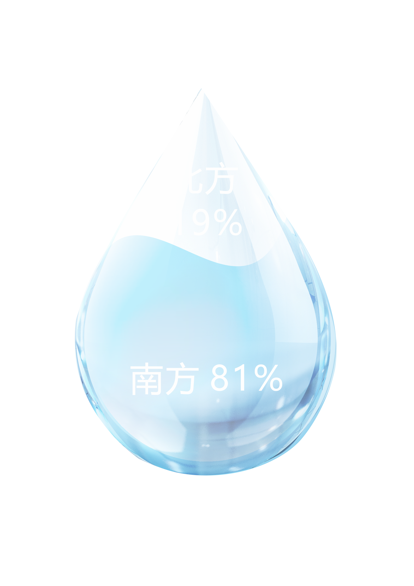

在本页面中，各年份数据依次在图表中循环显示，鼠标悬停于图表的数据部分时可以显示具体数值。
正中的人均水资源数据地图上， 圆形的大小和该省份人均水资源量呈正相关。 可以看出，我国人均水资源南方多，北方以华北平原为主的地区人均水资源较少。 右侧的柱状图也能看出水资源总量排行靠前的省份以西南地区为主， 而排行靠后的省份也以北方地区为主， 但排行靠后省份的总水量总体呈增加趋势， 体现南水北调工程正在发挥作用。 水质类别比例饼状图则展示出我国优质水资源整体短缺。 图中的信息都与词云图中的热词有所联系。
